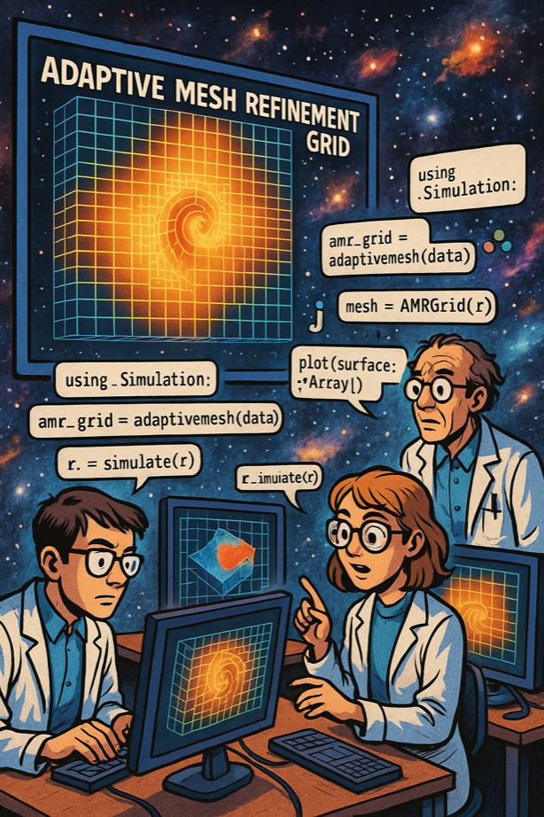

Notifications

Mera can tell you when long-running work finishes — with a local sound, an email, and/or a message to a Zulip team-chat channel (optionally with captured output, timing, and file attachments). Three functions are exported:
| Function | Purpose |
|---|---|
bell() | Play a short local sound (no configuration needed). |
notifyme(...) | Send an email and/or Zulip message, optionally with attachments, captured output, timing, and exception details. |
timed_notify(name, block) | Run block, measure its wall-clock time, and send the result via notifyme. |
Quick start
using Mera
bell() # local sound when something finishes
notifyme("Calculation finished!") # email and/or Zulip (after one-time setup)notifyme sends to whatever you have configured: an email address in ~/email.txt and/or a Zulip bot in ~/zulip.txt. With neither file present it does nothing harmful — so bell() works out of the box, and notifyme becomes active once you add a config file. See Setup & Usage for configuration and all options, and Examples for complete Mera workflows and troubleshooting.